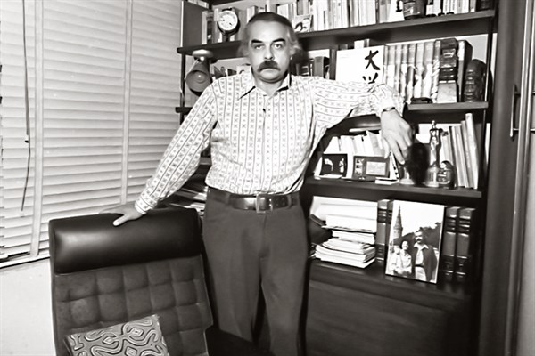
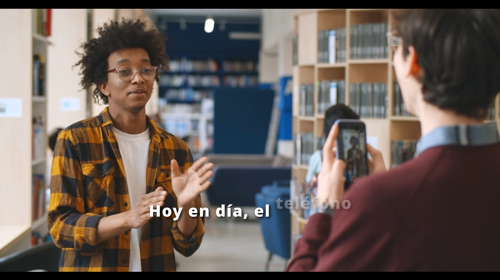
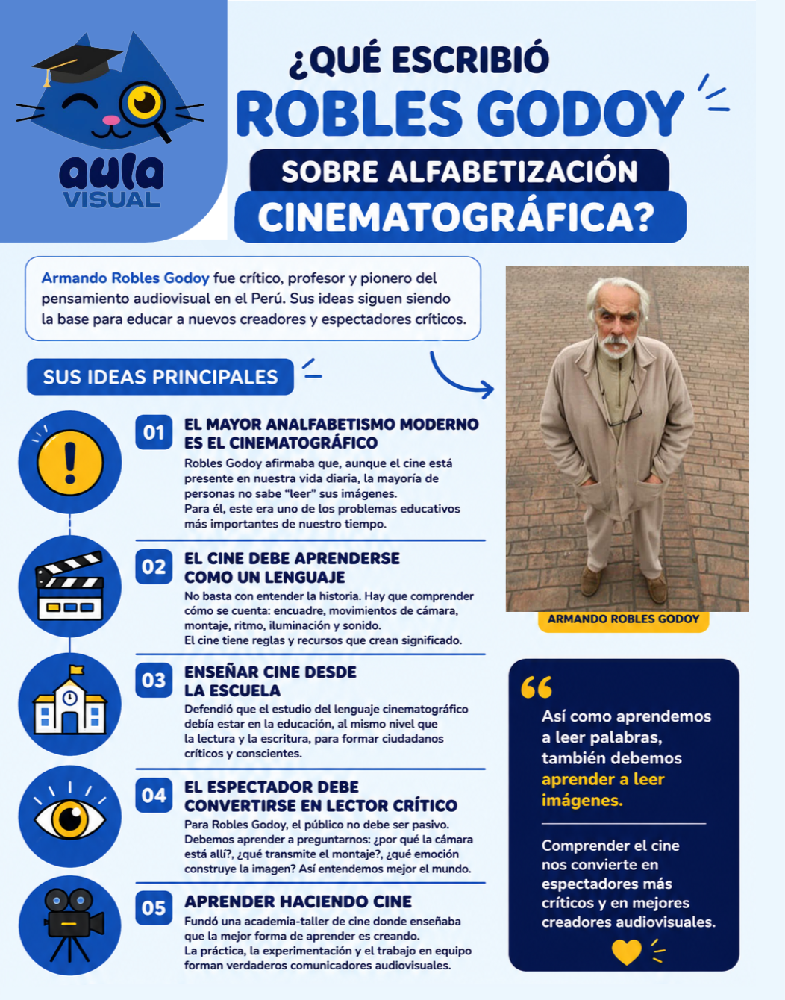
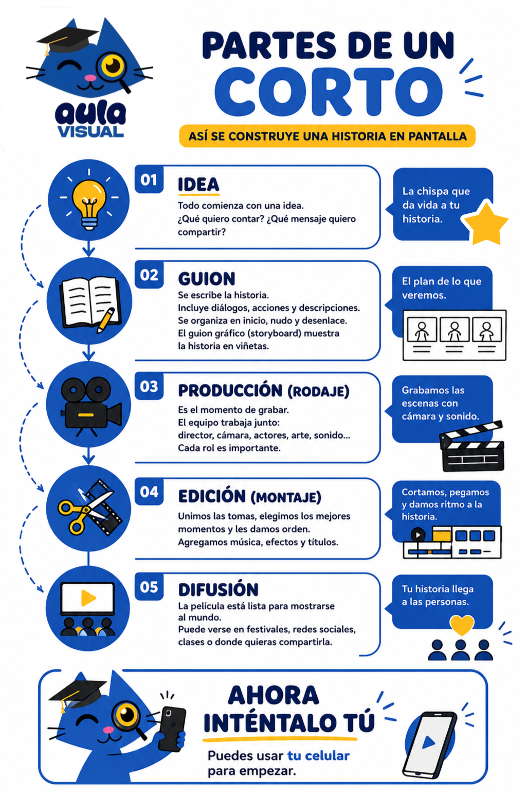

Observación
Los participantes aprenden a interpretar imágenes, sonidos y narrativas audiovisuales desde una mirada crítica.
De espectadores a creadores
Un recorrido por la alfabetización audiovisual y la transformación de estudiantes que descubren una nueva forma de observar, interpretar y crear historias mediante imágenes, sonidos y recursos audiovisuales.
Cada imagen cuenta una historia. Aprender a leerla también transforma nuestra manera de ver el mundo.
Comenzar el recorridoAntes de comenzar el recorrido, conoce el propósito de Aula Visual y la transformación que busca impulsar en estudiantes de educación secundaria mediante la alfabetización audiovisual.
Aula Visual propone convertir el teléfono celular y los recursos audiovisuales cotidianos en herramientas de pensamiento, expresión y creación colectiva.
A través de talleres teórico-prácticos, los estudiantes aprenderán a pasar del consumo pasivo de contenidos a la construcción consciente de historias, trabajando en equipo y asumiendo responsabilidades dentro de un proceso de rodaje.
Comprender el lenguaje audiovisual es fundamental para desarrollar una mirada crítica frente a las imágenes, los medios y los contenidos digitales que forman parte de nuestra vida cotidiana.
Armando Robles Godoy planteó la existencia de una forma de analfabetismo que no se relaciona con la incapacidad de leer palabras, sino con la dificultad para interpretar el lenguaje de las imágenes.
Aunque diariamente observamos películas, publicaciones, anuncios y videos en redes sociales, no siempre conocemos los recursos utilizados para construir esos mensajes ni la intención que existe detrás de ellos.

La alfabetización audiovisual busca que las personas dejen de ser únicamente espectadoras pasivas y aprendan a reconocer cómo los planos, los sonidos, el montaje y la composición producen significados y emociones.
Este conocimiento permite analizar críticamente los contenidos que consumimos y utilizar las herramientas audiovisuales para comunicar ideas, experiencias y realidades propias.
Las ideas de Armando Robles Godoy no se limitan al análisis del cine. También plantean la necesidad de enseñar el lenguaje audiovisual desde las escuelas, formando espectadores críticos y futuros creadores capaces de comunicar sus propias historias.
Esta reflexión abre paso a la metodología práctica de Aula Visual, donde los estudiantes dejarán de ser únicamente consumidores de imágenes para participar activamente en la creación de celumetrajes.
Continuar al Capítulo IILa alfabetización audiovisual cobra sentido cuando el aprendizaje se transforma en una experiencia práctica. Aula Visual propone talleres colaborativos donde los estudiantes descubren el lenguaje audiovisual mediante la creación de sus propias historias.
Cada sesión está diseñada para fomentar la participación, el trabajo en equipo y el desarrollo de habilidades audiovisuales mediante actividades prácticas que permiten a los estudiantes experimentar con el lenguaje del cine y la comunicación visual.
Los participantes aprenden a interpretar imágenes, sonidos y narrativas audiovisuales desde una mirada crítica.
Cada estudiante asume un rol dentro del equipo de producción, fortaleciendo la comunicación y la organización.
Utilizando recursos accesibles como teléfonos celulares, los estudiantes planifican y producen contenidos audiovisuales.
Cada actividad concluye con un espacio de diálogo donde los participantes comparten aprendizajes y experiencias.
Observación y análisis.
Planificación de la historia.
Producción audiovisual.
Edición y presentación.
Antes de implementar Aula Visual, el equipo tomó como referencia experiencias nacionales que han demostrado el impacto de la alfabetización audiovisual en contextos escolares.
Uno de estos referentes es MINKA, una iniciativa vinculada a la Universidad Nacional Mayor de San Marcos que evidencia cómo el trabajo colaborativo y la producción audiovisual pueden fortalecer el aprendizaje, la creatividad y la participación estudiantil.
Este registro del proceso creativo permite comprender que la alfabetización audiovisual no se limita al resultado final. También fortalece la organización, la responsabilidad, la creatividad y el aprendizaje colaborativo durante todas las etapas de producción.
Este repositorio reunirá los celumetrajes creados por los estudiantes durante el concurso de Aula Visual. Las producciones serán publicadas cuando finalicen los talleres y el proceso de evaluación.
Próxima producción audiovisual realizada por estudiantes participantes.
Próxima producción audiovisual realizada por estudiantes participantes.
Próxima producción audiovisual realizada por estudiantes participantes.
Aula Visual pone a disposición de estudiantes y docentes una colección de materiales que acompañan el desarrollo del proyecto y fortalecen el aprendizaje del lenguaje audiovisual.
Planificación completa del taller, objetivos de aprendizaje y contenidos.
Descargar PDFRequisitos, criterios de evaluación, cronograma y condiciones de participación.
Descargar PDFMaterial utilizado durante los talleres para introducir los conceptos principales de alfabetización audiovisual.
Ver presentaciónVideo de apoyo que resume la metodología del taller y las principales etapas del proceso de creación audiovisual.

Estos materiales resumen algunos conceptos fundamentales de alfabetización audiovisual y pueden utilizarse como recursos de consulta para estudiantes y docentes.
Un resumen visual de las principales ideas de Armando Robles Godoy sobre la necesidad de aprender a leer críticamente las imágenes y el lenguaje del cine.

Una guía visual que explica las etapas principales para construir una historia audiovisual: idea, guion, rodaje, montaje y difusión.

Esta colección continuará ampliándose con nuevos materiales didácticos conforme avance el proyecto Aula Visual.
Una iniciativa que busca fortalecer la alfabetización audiovisual en estudiantes de educación secundaria mediante talleres, recursos didácticos y la producción colaborativa de contenidos.
Alfabetizar audiovisualmente a estudiantes de secundaria de colegios nacionales mediante talleres teórico-prácticos e intensivos, transformándolos de espectadores pasivos en prosumidores críticos y creadores conscientes.
A través del uso del teléfono celular como herramienta pedagógica y de pensamiento, promovemos el trabajo en equipo, la expresión audiovisual, el rigor narrativo y la lectura crítica de los mensajes mediáticos.
Ser un proyecto universitario referente en la reducción del analfabetismo visual dentro del ámbito escolar peruano.
Buscamos consolidar una plataforma digital que sirva como vitrina del talento estudiantil y como caja de herramientas didácticas de libre acceso para docentes, fortaleciendo el vínculo entre la universidad pública y la educación básica.
Falta cada vez menos para iniciar esta experiencia de alfabetización audiovisual en las aulas escolares.
{kind=link}
{kind=link}